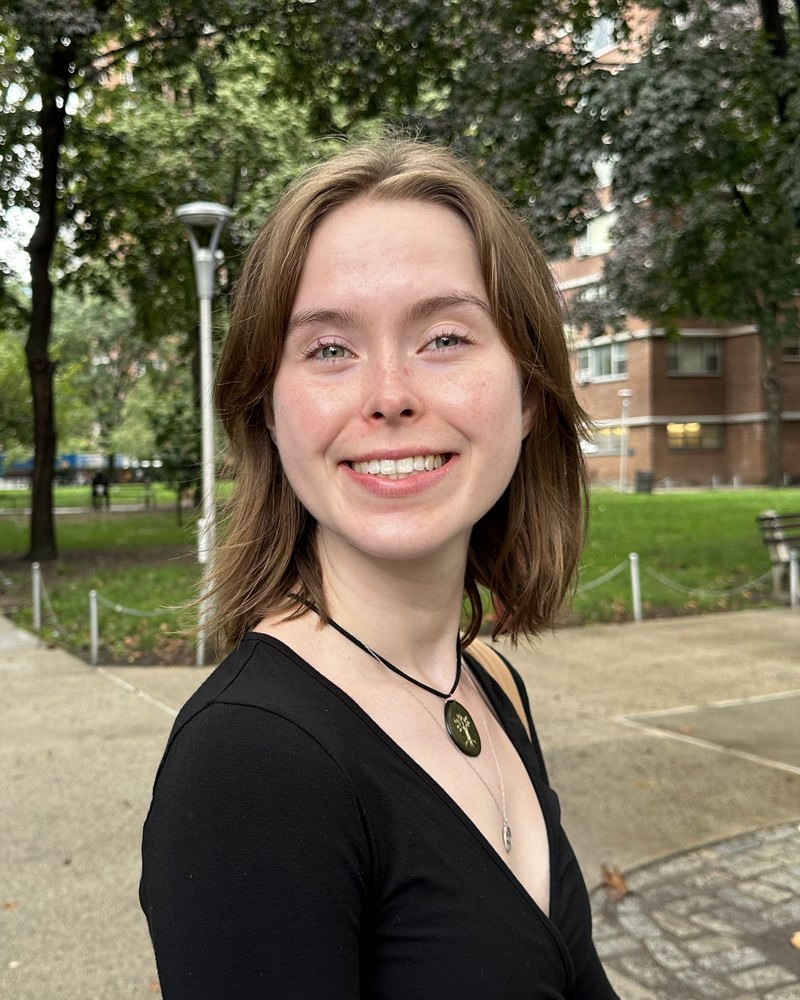

Analytics · Neuroscience · Performing Arts — New York
I'm Karolina Kozak, an M.S. student in Management and Analytics at NYU with a B.S. in Integrative Neuroscience from Fordham University. What connects my work is simple: I love solving problems, telling stories, learning, and moving fluidly between fields. I build on solid technical foundations, bring creativity to the process, and follow the evidence where it leads, especially on collaborative teams.
I design research studies, build databases, and turn information into actionable decisions without losing sight of the people behind the data.
Outside of analytics and science, I'm a classically trained opera singer, a pianist of over 15 years, and a self-taught photographer. I bring that artistry to how I present ideas and solve problems.

Management and Analytics, School of Professional Studies · 2026–2028
Integrative Neuroscience, Cellular & Molecular · Summa Cum Laude · GPA 3.975 · 2025
YoungPros Member
Member
Tools SQL & BigQuery · Python (pandas, matplotlib) · R/RStudio · Tableau · Excel · MATLAB · ImageJ · Photoshop, Lightroom, Premiere Pro · Claude
Analytical Quantitative Research · Statistical Analysis · Survey Design · Data Cleaning · Database Design · Risk Assessment
Business & Creative Sales · Marketing · Advertising · Social Media · Project Management · Photography · Piano · Public Speaking
Languages Polish (fluent)
Past, present, and ongoing projects. Choose a category to explore.